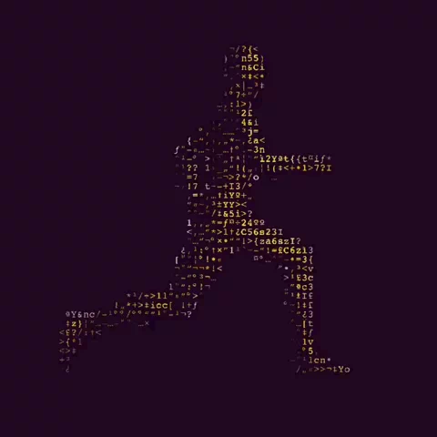

About me and my tech journey.

Yo! I'm André Gonçalves, a 22 years old software designer/developer and a tech enthusiast. My first contact with software development was in 2017, when I started studying at the technical school IFC (a federal institute in my state).
Back in these days, I made my first website for a homework, the class was just about HTML but I started learning JS and CSS cause I wanted to do a beauty and functional website. My teacher gave me a 0 and told me to redo using HTML exactly the way he asked to. I think it was a important lesson: first to don't rush the learning proccess and second to use tools that the project needs, don't overuse solutions that no contributes to the final result. IFC formed me as a Web Developer (my actual occupation area), but I have infinity interest areas besides it: cyber security, AI, automations, hardware... I'd love to explore all tech sides cause at first look it feels like magic, you don't understand what's happening, but then you study about it, dive deep and you reveal how the trick is done.
Tell me everything...